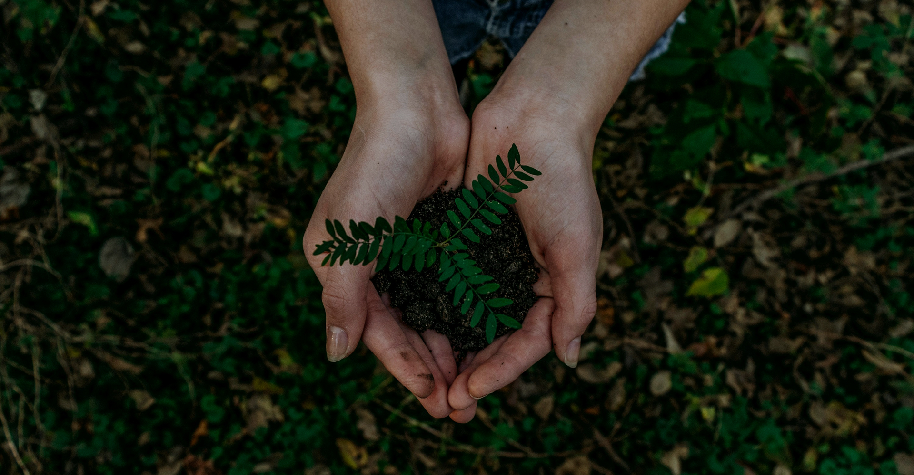
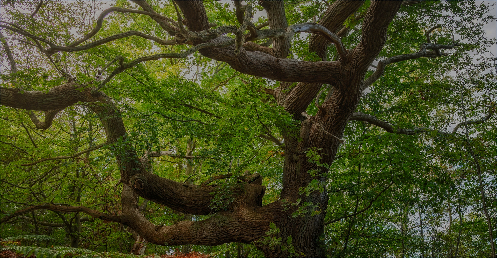

생명의숲 FOREST FOR LIFE
메뉴 열기
소개
활동
참여와 후원
자료실
검색 열기
언어선택 열기
마이페이지
팝업

내 나무 갖기
서울 마이트리
특별한 날을 기념하는 새로운 방법
자세히보기
2025 생명의 숲 후원의 달
지금지구와 우리를 위한 힘 모으기
2025.11.01 ~ 11.30
자세히보기
2022 울진산불 이후의 변화
숲의 상처와 회복
: 산불피해 복원현장 기록 사진전
자세히보기

나무 할아버지 박상진 교수
우리가 지켜야 할
고목나무 이야기
자세히보기
0
그루
우리가 함께 심은 102,302그루의 약속
work
news